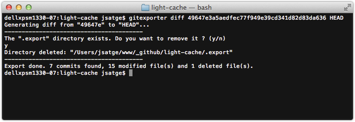

GitExporter
GitExporter is a PHP CLI tool designed to export commits from a Git repository.
Installation
Checkout the project, and create an alias to the tool in your .bashrc, or .profile file.
alias gitexporter="php '/Users/jsatge/www/git-exporter/classes/GitExporter.php'"
Usage
Navigate to a Git repository:
cd /Users/jsatge/www/sample-git-repository
Execute the script to export the diff between two commits:
gitexporter diff 07840746ad77cbbfc580413eea46de19387f7ef0 HEAD
Exported files are stored in a .export directory in the Git repository.
A _changelog.txt file will also be created in the .export directory,
with a list of the modified and deleted files between the two commits.
Options
You may specify your own export directory by using the --dir option:
gitexporter diff 07840746ad77cbbfc580413eea46de19387f7ef0 HEAD --dir=my-export-dir
Changelog
0.1.1
Refactors calls to count(), adds the makeDirTreeForFile() function
0.1
Initial version